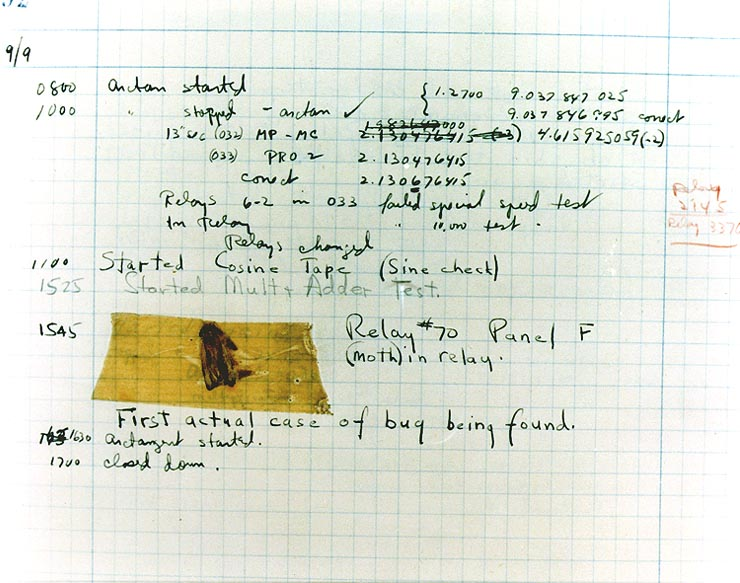
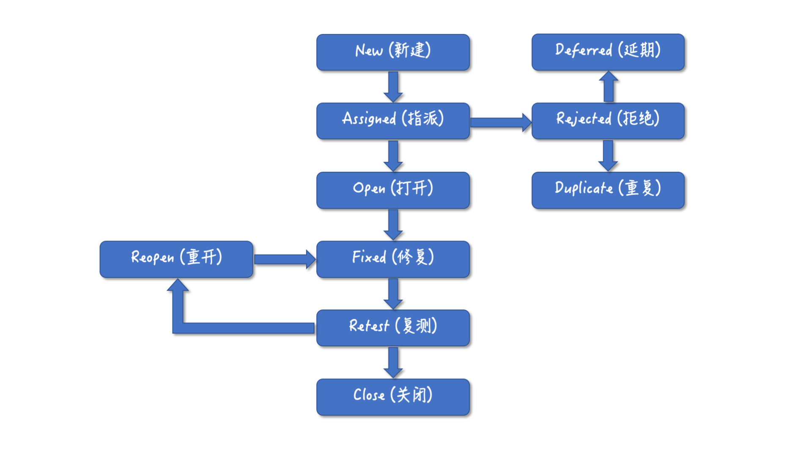

- 00 开篇词 你为什么应该学好软件工程？.md.html
- 01 到底应该怎样理解软件工程？.md.html
- 02 工程思维：把每件事都当作一个项目来推进.md.html
- 03 瀑布模型：像工厂流水线一样把软件开发分层化.md.html
- 04 瀑布模型之外，还有哪些开发模型？.md.html
- 05 敏捷开发到底是想解决什么问题？.md.html
- 06 大厂都在用哪些敏捷方法？（上）.md.html
- 07 大厂都在用哪些敏捷方法？（下）.md.html
- 08 怎样平衡软件质量与时间成本范围的关系？.md.html
- 09 为什么软件工程项目普遍不重视可行性分析？.md.html
- 10 如果你想技术转管理，先来试试管好一个项目.md.html
- 11 项目计划：代码未动，计划先行.md.html
- 12 流程和规范：红绿灯不是约束，而是用来提高效率.md.html
- 13 白天开会，加班写代码的节奏怎么破？.md.html
- 14 项目管理工具：一切管理问题，都应思考能否通过工具解决.md.html
- 15 风险管理：不能盲目乐观，凡事都应该有B计划.md.html
- 16 怎样才能写好项目文档？.md.html
- 17 需求分析到底要分析什么？怎么分析？.md.html
- 18 原型设计：如何用最小的代价完成产品特性？.md.html
- 19 作为程序员，你应该有产品意识.md.html
- 20 如何应对让人头疼的需求变更问题？.md.html
- 21 架构设计：普通程序员也能实现复杂系统？.md.html
- 22 如何为项目做好技术选型？.md.html
- 23 架构师：不想当架构师的程序员不是好程序员.md.html
- 24 技术债务：是继续修修补补凑合着用，还是推翻重来？.md.html
- 25 有哪些方法可以提高开发效率？.md.html
- 26 持续交付：如何做到随时发布新版本到生产环境？.md.html
- 27 软件工程师的核心竞争力是什么？（上）.md.html
- 28 软件工程师的核心竞争力是什么？（下）.md.html
- 29 自动化测试：如何把Bug杀死在摇篮里？.md.html
- 30 用好源代码管理工具，让你的协作更高效.md.html
- 31 软件测试要为产品质量负责吗？.md.html
- 32 软件测试：什么样的公司需要专职测试？.md.html
- 33 测试工具：为什么不应该通过QQ微信邮件报Bug？.md.html
- 34 账号密码泄露成灾，应该怎样预防？.md.html
- 35 版本发布：软件上线只是新的开始.md.html
- 36 DevOps工程师到底要做什么事情？.md.html
- 37 遇到线上故障，你和高手的差距在哪里？.md.html
- 38 日志管理：如何借助工具快速发现和定位产品问题 ？.md.html
- 39 项目总结：做好项目复盘，把经验变成能力.md.html
- 40 最佳实践：小团队如何应用软件工程？.md.html
- 41 为什么程序员的业余项目大多都死了？.md.html
- 42 反面案例：盘点那些失败的软件项目.md.html
- 43 以VS Code为例，看大型开源项目是如何应用软件工程的？.md.html
- 44 微软、谷歌、阿里巴巴等大厂是怎样应用软件工程的？.md.html
- 45 从软件工程的角度看微服务、云计算、人工智能这些新技术.md.html
- 一问一答第1期 30个软件开发常见问题解决策略.md.html
- 一问一答第2期 30个软件开发常见问题解决策略.md.html
- 一问一答第3期 18个软件开发常见问题解决策略.md.html
- 一问一答第4期 14个软件开发常见问题解决策略.md.html
- 一问一答第5期 22个软件开发常见问题解决策略.md.html
- 学习攻略 怎样学好软件工程？.md.html
- 特别放送 从软件工程的角度解读任正非的新年公开信.md.html
- 结束语 万事皆项目，软件工程无处不在.md.html
33 测试工具：为什么不应该通过QQ微信邮件报Bug？
你好，我是宝玉。十多年前，当我还是个野路子程序员时，我在外面接私活做项目，客户在使用过程中遇到了 Bug，直接就截个图，或者是用 Word 文档整理在一起，从 QQ 或者邮件上把 Bug 信息发送给我，我收到后再修复更新上线。
而现在正规的软件项目已经不会再用这种原始的方式来报 Bug 了，而是会借助测试工具来帮助报告和跟踪 Bug，即使你偶尔能看到有项目还在采用原始方式报 Bug，你肯定也会觉得这样做不专业。
但不知道你有没有仔细想过这个问题，为什么现在不通过 QQ/ 微信 / 邮件报 Bug，又有哪些测试工具可以帮助你更好地发现、报告和跟踪软件中的 Bug 呢？今天我们来展开讨论这个问题。
Bug 跟踪工具
我想你对于 Bug 这个词一定不陌生，它是我们软件中的缺陷或错误。这个词的诞生也很有意思。
1947 年 9 月 9 日，一只小飞蛾钻进了哈佛大学的一台计算机电路里，导致系统无法工作，操作员把飞蛾贴在计算机日志上，写下了“首个发现 Bug 的实际案例”。

图片来源：WikiPedia
虽然 Bug 的历史已经有 60 多年了，然而 Bug 跟踪工具却没有出现太久。软件项目中最早也是通过邮件、即时通讯等原始方式报告 Bug，直到 1992 年才有第一个专业的 Bug 跟踪软件GNATS。
在这之后才逐步有了像 Bugzilla、Jira、MantisBT 等专业的 Bug 跟踪工具。而现在，Bug 跟踪工具已经成为软件项目中必不可少的工具之一。
那么，Bug 跟踪工具是怎么逐步替代 QQ、邮件等方式来处理 Bug 的呢？
为什么要使用 Bug 跟踪工具？
我们在上一节学习了软件测试相关的理论知识，软件测试的主要工作就是发现 Bug、报告 Bug 和跟踪 Bug。测试人员发现 Bug 只是第一步，还需要报告 Bug 让开发人员可以知晓和定位，并且跟踪整个 Bug 修复的过程。
用 QQ 或者邮件报 Bug 的这种方式，看起来快捷简单，但是问题很多：
-
Bug 不能有效被跟踪，不知道一个 Bug 是不是已经被修复了；
-
效率很低，开发人员频繁的被这样的报 Bug 的消息打断，不得不停下手头的工作去甄别 Bug；
-
不能直观的了解当前项目的 Bug 状态，比如说：修复了多少，还有多少没有修复，近期 Bug 数量是增加了还是减少了。
不难看出，通过 QQ 等方式报告的 Bug，都是文字配合图片等信息，很难检索和分类，而 Bug 跟踪工具，采用结构化的数据来定义 Bug，每一个 Bug 都有一些关键的信息可以对 Bug 进行分类和检索。
在 Bug 跟踪工具使用中，一个基本的 Bug 信息包括：
-
标题；
-
描述（包括期望结果、实际结果和重现步骤等关键信息）；
-
优先级；
-
指派人；
-
状态（New、Open、 Rejected、Fixed 等）；
-
其他。
那这样的话，就很容易的对 Bug 进行分类和检索，比如说：
-
张三想查看所有分配给他的 Bug，那只要列出所有指派人是张三的 Bug；
-
想列出所有未解决的 Bug，只要列出所有状态不是 Close 或 Rejected 的 Bug 即可。
这样对于开发人员来说，可以直观的看到自己有哪些 Bug 需要处理，Bug 的描述信息也可以帮助重现 Bug、快速定位到 Bug 的原因；对于项目经理或者测试人员来说，可以直观的看到哪些 Bug 还没解决，及时了解项目进展。
另外，我在《12 流程和规范：红绿灯不是约束，而是用来提高效率》这篇文章中提到了项目中的流程和规范，在软件项目中，要把好的实践流程化，把好的流程工具化。Bug 跟踪工具则很好的贯彻了这一点，将 Bug 的解决过程流程化。
你平时在 Bug 跟踪系统中看到的 Bug 状态，看起来只是一个有限的状态列表，但背后其实是一套解决 Bug 的流程。就像下面这张图表示的这样，一个 Bug 从创建到最后结束，其实是有一个完整的流程的。

通过这样的流程，开发人员就可以集中对 Bug 进行分配、按照优先级分别解决，而测试人员则可以第一时间知道 Bug 处理的状态变化，及时验证，方便跟踪整个过程。
使用 Bug 跟踪工具的注意事项
报告 Bug 的目的是为了能跟踪 Bug，以及帮助开发人员重现直到解决问题。要想做到测试和开发高效协作，这里面有一些需要注意的事项。
首先，所有的 Bug 都应该通过 Bug 跟踪系统管理和跟踪，不应该再通过 QQ/ 微信 / 邮件的方式跟踪 Bug。如果客户、同事通过 Bug 跟踪系统之外的其他途径反馈 Bug，应该统一提交到 Bug 跟踪系统管理跟踪起来。
然后，不能把多条 Bug 合并成一条，一个 Bug 创建一个独立的 Ticket。我遇到过有些测试为了省事，把几条 Bug 合并成一个 Ticket 来报，导致的问题就是，必须这几条 Bug 都修复了，这个 Ticket 才能改变状态，如果其中一个 Bug 没有验证通过，需要 Reopen 整个 Ticket。
再有，描述清楚如何重现 Bug 非常重要。一个 Bug 如果无法重现，也没有日志、截图等辅助信息，那是非常难以定位的，会浪费很多开发人员定位 Bug 的时间。
最后，不要把 Bug 跟踪系统当成讨论板用。在项目中一个常见的场景是，一个 Ticket 下面，跟讨论版一样添加了很多留言，开发认为不是 Bug，测试认为是一个 Bug，开发又觉得是产品设计没定义清楚，应该让产品经理来讲清楚，皮球踢来踢去，最后问题还没解决。
Bug 跟踪系统的主要功能是用来跟踪 Bug 的，不是用来讨论和扯皮的。遇到上面的情况，其中一方就应该主动一点，拉上相关人面对面讨论，当面确认清楚这个 Bug 到底是什么问题，然后马上解决掉。
自动化测试工具
除了 Bug 跟踪工具，软件测试中还有很重要的一个工具就是自动化测试工具，虽然我在《29 自动化测试：如何把 Bug 杀死在摇篮里？》中已经有了较多篇幅说明，但这里还是想继续提一下，因为我觉得，未来自动化测试会占据越来越多的比例，很多手工测试的工作会逐步被自动化测试代替。
像美国 Facebook、Google、Amazon 这些大厂，单纯的手工测试职位在减少，一些手工执行测试用例检查的工作外包到了人力成本更低的像中国、印度、罗马尼亚等国家，而美国本土主要招聘的都是能写自动化测试的软件测试人员，或者直接就是开发人员来写这些自动化测试代码。
这就意味着对于软件测试人员来说，要求越来越高了，不仅要会设计测试用例，还要能写自动化测试脚本。同时对于开发人员来说，不仅要写功能代码，还需要实现一定量的自动化测试代码。
这些年自动化测试工具的快速发展，也降低了自动化测试的实现难度，可以方便地搭建自动化测试环境，通过简单的脚本语言就可以模拟人工操作。
但很多团队还是不愿意投入在自动化测试的开发上面，宁可雇佣更多的初级测试人员手工测试。
其实这个问题还是要整体来看，这就像修路，如果你从一个地方到另一个地方（类比测试所有用例），偶尔走几次，那么可以不修路（手动测试），如果你未来一段时间需要频繁的在两个地方通行（反复测试），那么最好现在就开始修建高速公路（自动化测试），这样可以节约你大量通行的时间 (测试时间)。
当然更多的情况其实是团队不知道该如何实施自动化测试，比如说测试人员不会写程序，开发人员太忙，或者开发人员不会写测试用例，或者不知道该选择什么样的自动化测试工具。
对于这种情况，我的建议是：
测试人员可以学习一些基本的编程知识，尝试自己实现自动化测试。自动化测试所需要的技术，主要是对 API 的调用，并不需要复杂的逻辑，其实学习门槛并不高，而且这种技术在工作效率、薪资、个人职业发展等方面的投资回报都是巨大的。
从项目的角度，应该加大对自动化测试的投入，让开发人员参与到自动化测试代码的开发中。增加自动化测试代码的覆盖，对于提升软件质量是有明显好处的，通过自动化测试可以提升测试效率，及时发现软件质量问题。
对于开发人员来说，如果已经有了测试用例，完成自动化测试并不复杂，这个投入其实比做一些重要性不高的功能回报更高。
自动化测试工具的选择，需要根据你的软件的特点，去找出来适合你软件自动化测试的几款，然后自己搭建环境试用一下。在本文后面的附录中，我会列出一些自动化测试工具供参考。
其他帮助发现 Bug 的测试工具
软件测试的一个主要工作就是发现 Bug，而要发现 Bug，就需要对软件的各个领域进行测试，比如说有性能、安全性、兼容性等领域。
这些不同领域的测试，要求也不一样，比如说性能测试要求能测试出软件是否有性能瓶颈，能达到多少用户的访问量，需要模拟大量用户并发访问；安全性测试则要求对软件可能存在的安全漏洞进行扫描、验证；兼容性测试则要针对不用环境不同设备，对软件进行测试，以确保不会因为环境不一致导致功能不正常。
这些测试要么人工很难完成，例如模拟大量用户并发访问；要么需要很深的专业知识，例如安全性测试；要么需要大量的设备和巨大的工作量，比如做兼容性测试。所以这些领域的测试，就需要借助工具的帮助才能进行测试，从而发现问题。
应用这些测试工具其实并不难，毕竟都有很成熟的 API，网上也有很多教程，真正需要的是去执行。另外如果想要最大化工具的价值，及时发现问题，还要考虑将测试工具的应用自动化，加入到你的持续集成流程中去。
以压力测试为例，你用 Jmeter 完成了压力测试脚本后，还可以考虑和 CI 集成，在每次构建时，运行一遍压力测试代码，可以在构建完成后看到直观的图表，还可以设置性能数据的阈值，如果性能指标低于阈值，会导致构建失败，这样就可以第一时间发现性能问题，缩小问题范围，并及时解决。
在这里，我也帮助搜集了一些相关的测试工具供参考，具体可以查看附录。
附录
Bug 跟踪工具
在项目管理工具那一篇文章中，我已经给你介绍了一些任务跟踪系统，比如说Jira、禅道、TAPD、云效等，都可以用来跟踪 Bug。
Bugzilla
Bugzilla 是由 Mazilla 公司提供的一款开源免费的 bug 跟踪系统。这是一款历史很悠久的产品。
MantisBT
MantisBT 是一个简单但功能强大的开源 bug 跟踪系统，可以通过各种插件来扩展其功能。
Redmine
Redmine 是一款开源的综合性的项目管理工具，不仅可以用于 Bug 跟踪，还可以用来跟踪项目进度。
自动化测试工具
除了传统的桌面应用外，现在移动设备的普及，要测试的终端也越来越多。借助一些自动化测试工具，可以帮助简化多设备的测试。下面简单介绍几个自动化测试工具。
Selenium
Selenium 是一个 Web 端的自动化测试工具，直接运行在浏览器中，用来模拟用户操作。类似的还有WebDriverIO 和 Nightwatch.js ，支持 Javascript，API 更简单更方便。
Appium
Appium 是一个开源、跨平台的自动化测试工具，用于测试移动原生应用，支持 iOS, Android 系统。
Macaca
Macaca 是阿里巴巴开源的一款面向多端的自动化测试工具，支持桌面端、Web、移动端、真实设备和模拟器。
更多自动化测试工具可以参考：Best Automation Testing Tools for 2019 (Top 10 reviews),(中文版)。
压力测试工具
很多软件在上线后，需要面对巨大的用户访问量，但如果等到上线后才发现程序性能不行，访问量一大就会导致服务崩溃，那就太晚了。所以最好是在测试阶段，就能测试出来程序的性能如何，瓶颈在哪里，然后在发布前对程序进行优化，确保能满足性能要求。
对程序性能的测试，就需要借助压力测试工具来模拟大量用户并发访问的场景。下面简单介绍一下几款常用的性能测试工具。
Apache JMeter
JMeter 是一款开源的压力测试工具，纯 Java 应用程序。
LoadRunner
LoadRunner 是惠普旗下的一款商业自动负载测试工具，可以通过录制的方式制作测试脚本，上手容易功能强大，可以方便的监控和分析性能测试结果。
阿里云性能测试 PTS
阿里云性能测试 PTS 是基于云端的压力测试服务，可以模拟从全国各地域运营商网络发起的流量，真实地反映使用情况，生成有价值的性能测试报告。
WebPageTest
WebPageTest 是一个可以用来测试和分析网页性能的在线工具，支持不同浏览器，支持 API。可参考《WebPagetest H5 性能测试工具入门详解》。
更多性能测试工具介绍可以参考：《10 大主流压力 / 负载 / 性能测试工具推荐》。
安全性测试工具
软件的安全性是非常重要的指标，有时候开发人员缺乏安全意识，就可能会导致程序存在安全漏洞。安全领域也是开发和测试之外的一个技术领域，中小公司一般不会有自己专业的安全团队，就需要借助一些安全性测试工具来帮助对软件进行安全性检测。
HP Fortify On Demand
Fortify On Demand 是惠普旗下的一款安全检测工具，可以通过分析源代码、二进制程序或者应用程序 URL 检测程序安全漏洞。
Sqlmap
Sqlmap是一款开源免费的检测 SQL 注入的工具。
IBM Application Security APPScan
APPScan 是 IBM 旗下的一款漏洞扫描工具，支持网站和移动 App。
更多安全性测试工具介绍可以参考：11 款常用的安全测试工具， 安全测试工具篇（开源 & 商业）， 最受欢迎的软件安全性测试工具有哪些？。
浏览器兼容性测试工具
网站开发最苦恼的问题之一就是浏览器兼容问题，不仅要兼容 Chrome、IE/Edge、Firefox 三大主流浏览器，还得考虑桌面设备和移动设备上的不同表现。如果人工对所有浏览器做兼容性测试，工作量比较大。好在也有一些不错的工具可以帮助做兼容性测试。
Browsera
Browsera 可以对不同浏览器下的布局提供报告，包括截图和 Javascript 错误。
Browslering
Browslering 可以针对不同浏览器进行测试，它在虚拟机中运行真实桌面浏览器，还可以人工进行交互。
更多浏览器兼容性测试工具可参考《10 个免费的顶级跨浏览器测试工具》
测试用例管理工具
我们在上一篇里面已经学习了，设计测试用例是软件测试很重要的工作，有专业的工具帮助管理测试用例，也可以起到事半功倍的效果。
TestRail
TestRail 是 TestRail 是一个专注于管理测试用例的工具，可以用它来创建测试用例和用例集，跟踪测试用例的执行和生成报告。
飞蛾
飞蛾 是 Coding 旗下的测试管理工具，对中文支持好，界面美观。
更多测试用例管理工具可以参考：《有哪些比较好的测试用例管理工具？》
总结
今天，我带你一起学习了软件测试工具的相关知识。软件测试，主要工作就是发现 Bug、报告 Bug 和跟踪 Bug。软件测试工具，也是围绕这三方面来帮助我们提高效率的。
Bug 跟踪工具，不仅可以方便的报告 Bug 和跟踪 Bug，更可以帮助开发人员将 Bug 的解决过程流程化。
自动化测试工具是发展趋势，未来自动化测试会占据越来越多的比例，很多手工测试的工作会逐步被自动化测试代替。
除了 Bug 跟踪工具和自动化测试工具，软件测试中还有性能测试工具、安全性测试工具、兼容性测试工具等，这些工具都可以更好的帮我们发现软件中的质量问题。
如果想要最大化工具的价值，及时发现问题，还要考虑将测试工具的应用自动化，加入到你的持续集成流程中去。